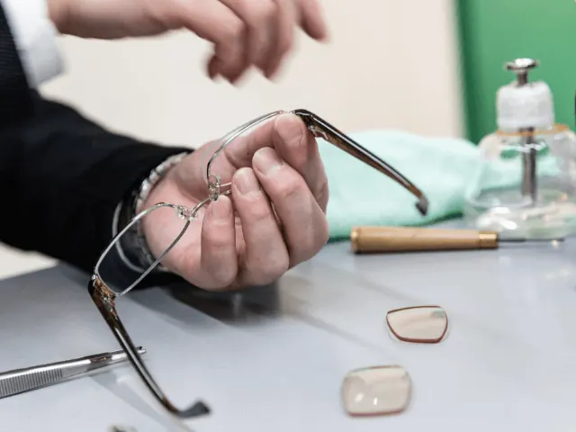
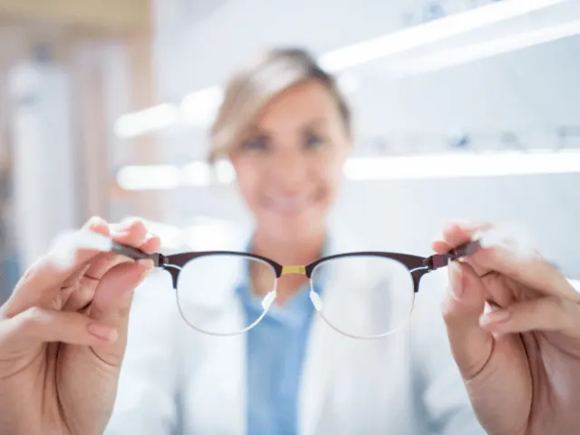
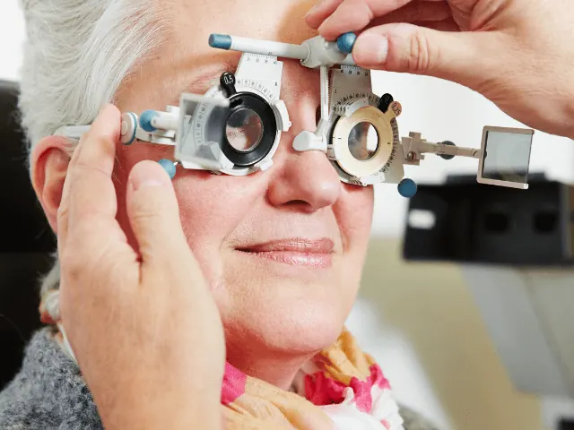

Partnerbijdrage
Wie de bril past zet hem op
Gepubliceerd op 12 mei 2023, bijgewerkt op 26 februari 2024

De een draagt een bril om beter te zien en de ander als bescherming tegen de zon. Maar zie maar eens de perfecte bril te vinden, en hoe doe je dat als je geen brillenhoofd hebt? Kies je dan toch liever voor lenzen, of wegen de voordelen van een bril daar niet tegenop? Hoe lang dragen mensen en brillen? En waar vind je leuke brillen in Nijmegen? Allemaal vragen, die ons lekker aan het werk hebben gezet! Hier komen de antwoorden.
Hoe zijn brillen ontstaan?
Brillen zijn een briljante uitvinding die niet alleen onze wereld, maar ook onze manier van waarnemen hebben veranderd. Het begon allemaal in de 13e eeuw toen de Italiaanse geleerde Salvino D’Armate de eerste bril ontwikkelde bestaande uit twee glazen lenzen die aan elkaar waren bevestigd met een frame. In eerste instantie een uitkomst voor wetenschappers en monniken mogelijk om manuscripten beter te bestuderen.
Vanaf de 18e eeuw werd het dragen van brillen steeds meer een modeaccessoire en werden er steeds meer stijlen en designs ontwikkeld. Naast het corrigeren van visuele gebreken werden brillen dus ook een manier om persoonlijkheid en stijl uit te drukken.

De voordelen van de bril ten opzichte van lenzen?
Zowel brillen als contactlenzen hebben hun voordelen, maar er zijn enkele specifieke voordelen aan het dragen van een bril in vergelijking met contactlenzen:
Gezondheid van de ogen
Brillen zijn over het algemeen gezonder voor de ogen dan contactlenzen. Dit komt omdat contactlenzen direct op het oog zitten en kunnen leiden tot oogirritatie, infecties en andere problemen.
Gemakkelijker te onderhouden
Brillen zijn gemakkelijker te onderhouden dan contactlenzen. Het is bijvoorbeeld veel gemakkelijker om een bril schoon te maken en te desinfecteren dan contactlenzen.
Lagere kosten op de lange termijn
Hoewel de initiële kosten voor een bril hoger kunnen zijn dan die voor contactlenzen, kunnen brillen op de lange termijn veel voordeliger zijn. Brillen hebben bijvoorbeeld geen vervangbare delen, zoals lenzen en onderhoudsvloeistoffen, die regelmatig moeten worden vervangen.
Stijl en mode
Brillen bieden een breed scala aan stijlen en kennen modieuze monturen, terwijl contactlenzen alleen in beperkte kleuren beschikbaar zijn.
Gemakkelijk af te zetten
Een bril kan gemakkelijk worden afgezet als je bijvoorbeeld je ogen even wilt rusten of als je je gezicht wilt wassen. Contactlenzen daarentegen moet je voorzichtig uit je ogen halen en in je lenzendoosje bewaren. Meer gedoe dus.

Welke soorten brillen heb je allemaal?
Tegenwoordig hebben we een breed scala aan verschillende soorten brillen. Van eenvoudige leesbrillen tot geavanceerde brillen met multifocale lenzen, gepolariseerde lenzen en andere technologische functies. Welke dat allemaal zijn? Dat nemen we graag met je door!
- Enkelvoudige brillen: Enkelvoudige brillen hebben één enkele sterkte over de hele lens. Deze brillen worden gebruikt voor het corrigeren van bijziendheid, verziendheid of astigmatisme.
- Bifocale brillen: Bifocale brillen hebben twee verschillende sterktes op dezelfde lens – meestal een sterkte voor veraf en een sterkte voor dichtbij. Handig als je zowel een correctie voor veraf als dichtbij nodig hebt.
- Multifocale brillen: Multifocale brillen hebben meerdere sterktes op dezelfde lens, waardoor ze geschikt zijn voor mensen die zowel veraf als dicht bij een correctie nodig hebben.
- Leesbrillen: Leesbrillen zijn ontworpen om alleen dichtbij te corrigeren en worden gebruikt door mensen die alleen een correctie nodig hebben voor het lezen van boeken, tijdschriften of andere materialen op korte afstand. Een bril die je overal kunt krijgen, lenen en vinden bij mensen thuis.
- Computerbrillen: Computerbrillen bestaan nog niet zo lang, ze zijn ontworpen om de vermoeidheid van de ogen te verminderen die wordt veroorzaakt door langdurig kijken naar computerschermen. Deze brillen zijn meestal voorzien van een anti-reflecterende coating en een blauw licht filter, die je misschien wel kent van je mobiele telefoon.
- Zonnebrillen: Zonnebrillen zijn ontworpen om je ogen te beschermen tegen fel licht en Uv-stralen van de zon. Deze brillen zijn verkrijgbaar in verschillende tinten en stijlen, waaronder gepolariseerde lenzen die de schittering verminderen en het contrast verbeteren.
- Sportbrillen: Sportbrillen zijn ontworpen om de ogen te beschermen tegen blessures tijdens het sporten. Deze brillen zijn meestal gemaakt van sterkere materialen en zijn voorzien van speciale functies, die goed combineren met de sport. Over sportbrillen gesproken, je hebt ook nog speciale brillen voor tijdens het zwemmen!
Genoeg om uit te kiezen, en veel methodes om goed voor je ogen te zorgen! Maar waar in Nijmegen vind je jouw perfecte bril?

Waar vind je de beste brillenwinkels van Nijmegen?
Loop je in de stad? Dan kom je meerdere winkel tegen, een aantal daarvan zijn:
Eyesandmore in de Moenenstraat
Eyesandmore in de Moenenstraat in Nijmegen is uw one-stop-shop voor al uw optische behoeften. Van stijlvolle brillen tot deskundige oogzorg, zij bieden alles wat u nodig heeft voor een perfect zicht. Hun ervaren team van opticiens helpt u bij het vinden van de perfecte bril die uw persoonlijkheid benadrukt en uw zicht verbetert. Kom langs bij Eyesandmore in de Moenenstraat en ervaar zelf hun uitstekende service en brede collectie. Uw ogen verdienen immers niets minder dan het beste.
Eyelove Brillen XXL in de StikkeHezelstraat
Eyelove Brillen XXL in de StikkeHezelstraat in Nijmegen is het ultieme adres voor de brillendrager die waarde hecht aan stijl en kwaliteit. Hier vinden klanten een uitgebreide selectie van modieuze brillen voor elke smaak en behoefte. Het toegewijde team van Eyelove Brillen staat klaar om u te begeleiden in uw zoektocht naar de perfecte bril. Bij Eyelove Brillen XXL wordt zorg voor uw zicht gecombineerd met een scherp gevoel voor stijl. Ervaar het zelf en breng een bezoek aan hun winkel in de StikkeHezelstraat.
Hans Anders in de Burchtstraat
Hans Anders in de Burchtstraat in Nijmegen is meer dan alleen een opticien; het is uw partner in zicht en stijl. Met een breed assortiment aan modieuze brillen en contactlenzen, biedt Hans Anders oplossingen die passen bij elke levensstijl. Het ervaren team van Hans Anders staat altijd klaar om u te helpen bij het vinden van het perfecte montuur of de juiste lenzen. Bezoek Hans Anders in de Burchtstraat en ontdek hoe zij zorg voor uw ogen combineren met betaalbare, trendy opties. Hier vindt u altijd wat u zoekt.
Kock Bril Shop in de Augustijnenstraat
Bij Kock Bril Shop in de Augustijnenstraat in Nijmegen ontdekt u een wereld waar stijl en zicht naadloos samenkomen. Hier vindt u een breed scala aan brillen, variërend van klassieke designs tot de nieuwste trends. Het vriendelijke en ervaren team van Kock Bril Shop staat voor u klaar om u te begeleiden bij het kiezen van de perfecte bril die uw unieke persoonlijkheid weerspiegelt. In hun winkel in de Augustijnenstraat combineren ze aandacht voor uw zichtbehoeften met een scherp oog voor stijl. Stap binnen bij Kock Bril Shop en ervaar het zelf.